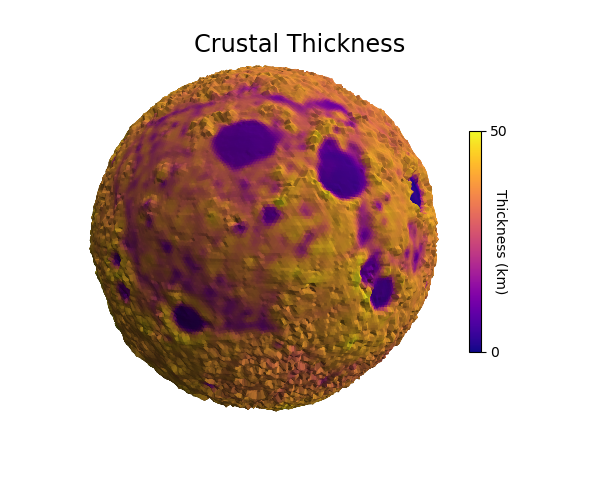
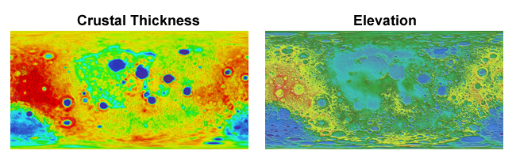

Data Colormap Modification¶
This example uses data from two images, both using the hue component to indicate value. For the ‘crustal thickness’ image:
- hue was used to geometrically map to elevation.
- elevation was used to map a sequential colormap.
- elevation was then removed with a geometric map to a uniform radius.
Note that this technique of changing the colormap assumes that the hue in the original image is linear with the data values.
Now that the surface was colored, the ‘elevation’ image was used for mapping the geometry using hue. For both images, the color component was used by setting cref to ‘h’. The hzero parameter was set so that the start values increase in a negative direction going from blue to cyan, green, red, etc.
Using a sequential color map, along with a shaded geometry, provides a clear representation of two different data sets in three dimensions. This is particularly useful when printing in a grey scale.
import numpy as np
from matplotlib import pyplot as plt
import s3dlib.surface as s3d
#.. Data Colormap Modification
# 2. Setup and map surfaces .........................................
rez = 6
moon = s3d.SphericalSurface(rez)
# change colormap from a 'hue-based' to a sequential colormap.
moon.map_geom_from_image('data/moon_crustal_thickness.png', cref='h', hzero=-0.82)
moon.map_cmap_from_op(lambda rtp : rtp[0], 'plasma')
mooncbar = moon.cBar_ScalarMappable
moon.map_geom_from_op(lambda rtp : [ np.ones(len(rtp[0])) ,rtp[1], rtp[2] ] )
moon.map_geom_from_image('data/moon_elev.png', 0.2, cref='h', hzero=-0.80)
moon.shade( 0.2, direction=[0,-1,1] )
# 3. Construct figure, add surfaces, and plot ......................
fig = plt.figure(figsize=plt.figaspect(0.8) )
fig.text(0.5, 0.93, "Crustal Thickness", ha='center', va='top',
fontsize='xx-large', multialignment='right')
ax = plt.axes(projection='3d')
minmax = (-0.65,0.65)
ax.set(xlim=minmax, ylim=minmax, zlim=minmax)
minc, maxc = moon.bounds['vlim']
cbar=plt.colorbar(mooncbar,ax=ax,ticks=[minc, maxc], shrink=0.6)
cbar.ax.set_yticklabels(['0', '50'])
cbar.set_label('Thickness (km)', rotation=270, labelpad = 0)
ax.add_collection3d(moon)
ax.set_axis_off()
ax.view_init(5,170)
plt.show()